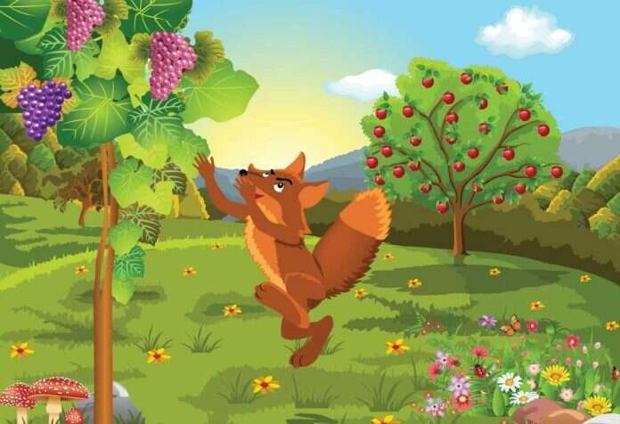

The fox and the grapes
>2. The Fox and the Grapes One afternoon, a fox which was out for a walk in the jungle came across a bunch of grapes hanging. Its mouth watered at the very sight of the grapes. The fox thought to himself that if it could get the bunch of grapes, it would be just the thing to quench its thirst in the sweltering heat of the afternoon. It jumped high to reach the bunch of grapes but failed. It tried again and again, but the fox missed it each time. After several failed attempts, the fox gave up and walked away saying that the grapes were too sour.
Moral of the story:The sour grapes story for kids taken from Aesop’s fables “The fox and the grapes” is a popular story having a moral. The lesson that we can learn through this interesting story is that it is natural for us to dislike or scorn something that is not within our reach.